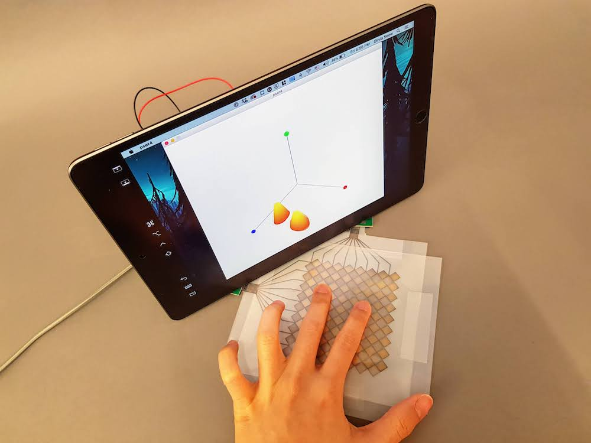
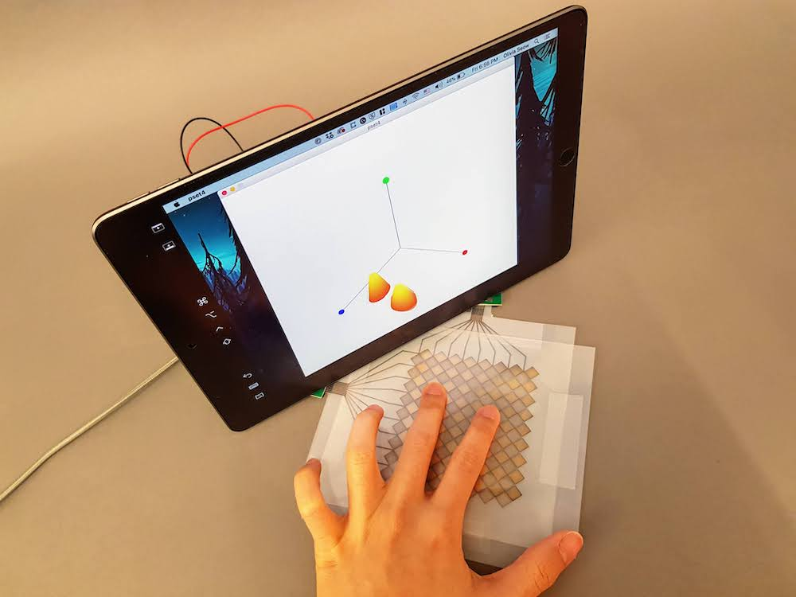

6.810 Engineering Interactive Technologies (fall 2021)
Lab 14: Taking Photos
In this lab, you will take photos with differently colored backdrops. A professional looking photo will make your work look so much better when you put it on your website or project portfolio, so we hope this will be helpful for you. You will also learn how remove unwanted objects from your photo and in general improve the quality of your picture.


Steps:
Deliverables
At the end of the lab, upload to your student google drive:
5 photos of your multi-touch pad: each photo should show the printed multi-touch pad, at least one finger touching the multi-touch pad, and either the signal visualization. blob detection, or your custom application on a screen), photos should have at least two different backgrounds (e.g. gray, red) and should be taken from different angles. Make sure your photos are cropped properly and no stuff is in the image that shouldn't be there.
Help us Improve Class Materials for Lab14:
Please let us know if you had any trouble with the photo taking or if anything was confusing in the write up.
You can add your comments here.
(1) Setting up Backdrops
To get a nice homogeneous background, we use something that is called a backdrop. It is basically just a long roll of colored paper or PVC sheet that we can use as background.
Setting up Backdrops: We already taped the backdrops to a wall in the class room. You can go ahead and place your multi-touch pad and laptop on it. We have backdrops both where the printers were previously setup as well as on the side where the laminators were.
(2) Show Processing Window on Laptop Screen
Once you have your multi-touch placed on the backdrop, you still have to make sure it shows the Processing Window on your laptop.
What Data to Show in the Processing Window: You can either show the raw signal on the Serial Plotter (pset2/3), the blob detection (pset4), or the touch pressure visualization (pset5).
Either Use Screenshot or Live Program: We recommend you try to take a photo of your live data since that will be more authentic. However, if that is too much work to get your touchpad to run again, you can also look through your previous pset submissions and put a frame of the video in the background. Just make sure that when you take the photo later that your finger positions match what you show on the laptop screen.
(2) Taking Photos
Use your Phone: You don't need a fancy camera these days to take a decent photo. Use your mobile phone.
Decide on Photo Perspective: Below are some photos students took last year. It is worth taking a moment to think about which one you like most and why. Which arrangement would you use for your touchpad? What would you change?
Check Photo Edges: Before taking your photo, check that you are only having the backdrop in the view and not the rest of the 6.810 class room visible on the left and right edge of the photo. We can help a bit with this in the postprocessing further below, but if you can avoid it you should try.
 



(3) Post Processing Your Photo
Once you took your photo, send them to your laptop for further processing.
Open Photo Editor Software: Open Adobe Photoshop so we can further improve your photo.
Crop Tool: Cropping our the background..
Contrast Improvement: You can improve the contrast using the following tools..
Removing Things from a Photo: You can use the stamp tool...
Before you ever photoshop an image, consider if it is morally ok to do so. For instance, it is totally ok to remove the dirt in the image and to fix the background problem, but it would NOT BE OKAY to remove engineering mistakes from your prototype or even worse add functionality that was never there.


Open your own image, mine looks like this:

Select the 'Clone Stamp Tool' from the Tool menu.

You can follow my instructions below or watch this short video here on how to use the clone stamp tool.
With the clone stamp tool selected, press Alt + click somewhere on the black background.
This will 'copy' that area using the center of your click as the reference point.
Now click on the objecty ou want to remove, this should start making it black.
It is best practice to not drag and 'paint out' the area.
It is better to repeatedly Alt+click somewhere to copy that area, and then click again on the object you want to remove to stamp there, so you sample from multiple areas.

Ok, so that's not bad but it's clearly visible that something in the image was modified.
To blur this a bit more, use the 'patch' tool from the toolbar.
Using the patch tool, draw a selection around your stamped area.

Now drag that area over another black area, both will be mixed together.
Make sure _not_ to hit the laptop or a part of the touchpad, so this here is bad:
Repeat this a couple of times for better sampling results.

Done!
Before and After:
Deliverables
At the end of the lab, upload to your student google drive:
5 photos of your multi-touch pad: each photo should show the printed multi-touch pad, at least one finger touching the multi-touch pad, and either the signal visualization. blob detection, or your custom application on a screen), photos should have at least two different backgrounds (e.g. gray, red) and should be taken from different angles
5 photos of your multi-touch pad: each photo should show the printed multi-touch pad, at least one finger touching the multi-touch pad, and either the signal visualization. blob detection, or your custom application on a screen), photos should have at least two different backgrounds (e.g. gray, red) and should be taken from different angles. Make sure your photos are cropped properly and no stuff is in the image that shouldn't be there.Please let us know if you had any trouble with the photo taking or if anything was confusing in the write up.
You can add your comments here.
5 photos of your multi-touch pad: each photo should show the printed multi-touch pad, at least one finger touching the multi-touch pad, and either the signal visualization. blob detection, or your custom application on a screen), photos should have at least two different backgrounds (e.g. gray, red) and should be taken from different angles